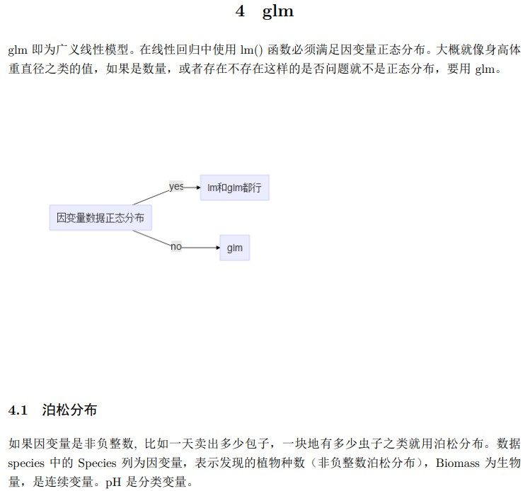

在rmarkdown文件中可以使用DiagrammeR包插入流程图之类的示意图。可以选择插入Graphviz和Mermaid。
Mermaid
Mermaid语法和很多markdown编辑器比如obsidian里有很好的集成。也可以在线画图，然后导出png或者直接使用生成的链接。网址：https://mermaid.live/
1
2
3
4
5
6
|
library(DiagrammeR)
mermaid("graph LR
A(( )) -->|否| B[Level 2]
A --> |是| C[Level1]
C --> B
",height='100%',width='100%')
|
但是Mermaid在rmarkdown中进行pdf渲染时会出现一小块空白。

这里代码为：
1
2
3
4
5
6
7
|
```{r,echo=FALSE,dev='png'}
library(DiagrammeR)
mermaid("graph LR
因变量数据正态分布--yes-->lm和glm都行
因变量数据正态分布--no-->glm
",height='100%',width='100%')
```
|
Graphviz
而Graphviz并不比Mermaid复杂，除了不会在pdf渲染时出错，在修改颜色形状以及大量连线方面都颇有优势。在线画图网站：https://dreampuf.github.io/GraphvizOnline/
不用箭头而连线连接
1
2
3
4
5
|
DiagrammeR::grViz("
graph G {
A -- B
}
",height=400,width='100%')
|
用箭头连接
1
2
3
4
5
|
DiagrammeR::grViz("
digraph G {
A -> B
}
",height=400,width='100%')
|
改变node和edge样式
1
2
3
4
5
6
7
8
9
|
DiagrammeR::grViz("
digraph G {
node [shape=squre,style=filled,color=yellow]
edge [style=dotted,color=red]
A[color=red]
B[color=blue]
{A,B,C} -> {D,E,F}
}
",height=400,width='100%')
|
不要总是一边连到另一边
1
2
3
4
5
6
|
DiagrammeR::grViz("
digraph G {
layout=neato;
A -> {B,C,D,E,F,G,F}
}
",height=400,width='100%')
|
稍微复杂一点的成品
- splines=false：强制连线是直线，如果出现丑陋的曲线可以使用这个命令。
- rankdir=LR:从左到右的顺序
- arrowhead: 箭头形状
- subgraph: 用框框起来，还可以加字
- 注意DiagrammeR::grViz(’’)最好用单引号，这样里面包含的graphviz的语法就可以用双引号，虽然graphviz语法单引号和双引号都不会影响在rmarkdown里的渲染，但是graphviz的标准格式是双引号。
- height=400,width=‘100%’：这两条命令控制图形的大小。height=400，最大高度为400px，这样窄长型的图比如前两张就不会变得极大。width=‘100%,’宽度最大填满整个容器。这样图片会自动适应屏幕的宽度，用手机看的时候也不会太大。
1
2
3
4
5
6
7
8
9
10
11
12
13
14
15
16
17
18
19
20
21
22
23
24
25
26
27
28
29
30
31
32
33
34
35
36
37
38
39
|
DiagrammeR::grViz('
digraph G {
splines=false;
rankdir =LR;
node [shape = circle,
style = filled,
color = grey25,
label=""]
edge [color = grey25,arrowhead = vee]
subgraph cluster_0{
node [fillcolor = red3]
a b c
label="Eingabeschicht"
style=filled;
color=lightgrey;
}
subgraph cluster_1{
node [fillcolor = blue3]
d e f g
label="verborgene Schicht"
style=filled;
color=lightgrey;
}
subgraph cluster_2{
node [fillcolor = green3]
h i
label="输出层"
style=filled;
color=lightgrey;
}
{a b c}->{d e f g}->{h i}
}
',height=400,width='100%')
|